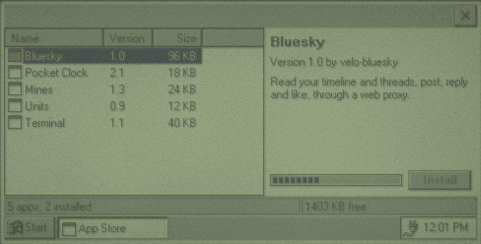
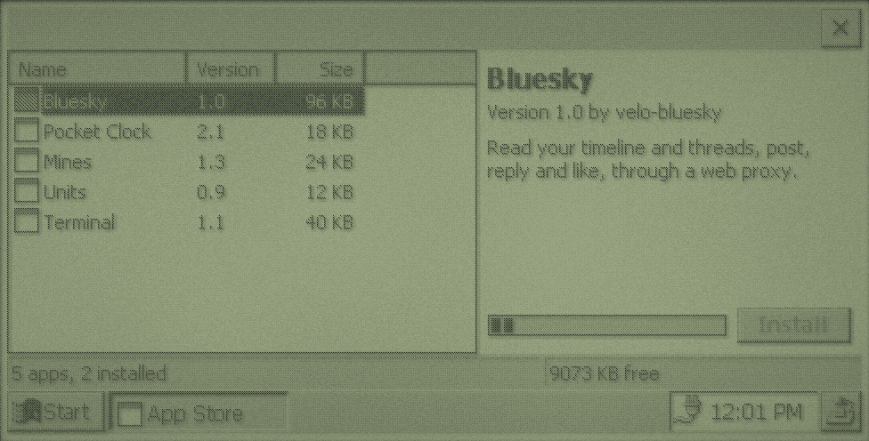

The Goal
A program that lists software from the web, downloads what the user picks, installs it with a Start menu shortcut, and removes it again later. The interface is recipe 2 from chapter 4. The network part is chapter 6. This chapter is the rest: what "installing" means on a Velo.


appstore example's interface, with a pretend download.There's a complete on-device installer to learn from: velo-apps' Velo Software Library (installer/library.c), which installs from a card catalogue with dependencies, shared files, shortcuts, registry entries and uninstalling, on both CE versions.
No Installer to Lean On
Later versions of CE install .cab packages with wceload.exe. Neither Velo ROM has it. In the 1990s, Velo software was installed from a PC over the desktop connection. So your store does the installing itself, which turns out to be simple: copy files, make a shortcut, write some registry values. Distribute programs as plain files, not CABs.
The Catalogue
Keep it easy to parse on the Velo. A tab-separated text file, one app per line, needs no JSON parser and downloads in a second:
bluesky Bluesky 1.0 98304 BlueskyFrame http://example.com/velo/ce1/bluesky.exe Read and post to Bluesky through a web proxy.
clock Pocket Clock 2.1 18432 ClockFrame http://example.com/velo/ce1/clock.exe A big clock with alarms.The fields are an ID, the name, version, size in bytes, the program's window class (so the store can tell if it's running), the download address and a description. Serve one catalogue per CE version, since every program needs a CE 1.0 and a CE 2.0 build. The store knows which it is at compile time:
#if _WIN32_WCE >= 200
#define CATALOGUE_URL "http://example.com/velo/ce2/catalogue.txt"
#else
#define CATALOGUE_URL "http://example.com/velo/ce1/catalogue.txt"
#endifAdd a CRC-32 or a hash of each file to the line, so a download that was cut short or garbled is caught before it's installed.
Downloading
Download like fetch, but instead of keeping the body in memory, write each chunk to a file as it arrives, and keep a running checksum:
static DWORD crc32_update(DWORD crc, const BYTE *data, DWORD length) {
crc = ~crc;
while (length--) {
crc ^= *data++;
for (int bit = 0; bit < 8; bit++) {
crc = (crc >> 1) ^ (0xEDB88320 & (0 - (crc & 1)));
}
}
return ~crc;
}Start with a CRC of 0 and pass each chunk through. Write to a temporary name such as \Program Files\Bluesky\bluesky.exe.part, and only move it into place when the size and checksum match. Then a failed download never leaves a broken program behind. Report progress to the interface with PostMessageW, as chapter 6 does.
Is there room?
Check before you start. GetStoreInformation fills a STORE_INFORMATION with the object store's size and free space:
static void update_status(void) {
STORE_INFORMATION store;
WCHAR text[64];
int installed = 0;
for (int index = 0; index < (int)APP_COUNT; index++) {
installed += apps[index].installed;
}
wsprintfW(text, L"%d apps, %d installed", (int)APP_COUNT, installed);
SendMessageW(status_bar, SB_SETTEXT, 0, (LPARAM)text);
if (GetStoreInformation(&store)) {
wsprintfW(text, L"%d KB free", (int)(store.dwFreeSize / 1024));
SendMessageW(status_bar, SB_SETTEXT, 1, (LPARAM)text);
}
}Storage and program memory share the same RAM, so leave a margin. A store that fills the object store leaves the Velo unable to run anything, including itself.
Installing
An install is three steps. Each is something the user could undo by hand in the file manager, which is how it should be.
- Files. Programs go in their own folder in
\Program Files. DLLs that other programs load go in\Windows, because CE 1.0'sLoadLibraryWdoesn't look in the program's own folder. - A shortcut in
\Windows\Programs, so it's on Start > Programs.\Windows\Desktopputs one on the desktop as well. - A record in the registry of what was installed, for updating and removing.
static BOOL install_program(LPCWSTR name, LPCWSTR downloaded) {
WCHAR folder[MAX_PATH];
WCHAR program[MAX_PATH];
WCHAR shortcut[MAX_PATH];
wsprintfW(folder, L"\\Program Files\\%s", name);
wsprintfW(program, L"%s\\%s.exe", folder, name);
wsprintfW(shortcut, L"\\Windows\\Programs\\%s.lnk", name);
CreateDirectoryW(folder, NULL);
DeleteFileW(program);
if (!MoveFileW(downloaded, program)) {
return FALSE;
}
return SHCreateShortcut(shortcut, program) != 0;
}
static void record_install(LPCWSTR id, LPCWSTR version, LPCWSTR folder, LPCWSTR shortcut) {
HKEY key;
DWORD disposition;
WCHAR path[96];
wsprintfW(path, L"Software\\VeloStore\\Apps\\%s", id);
if (RegCreateKeyExW(HKEY_LOCAL_MACHINE, path, 0, NULL, 0, KEY_ALL_ACCESS, NULL, &key, &disposition) != ERROR_SUCCESS) {
return;
}
RegSetValueExW(key, L"Version", 0, REG_SZ, (const BYTE *)version, (wcslen(version) + 1) * sizeof(WCHAR));
RegSetValueExW(key, L"Folder", 0, REG_SZ, (const BYTE *)folder, (wcslen(folder) + 1) * sizeof(WCHAR));
RegSetValueExW(key, L"Shortcut", 0, REG_SZ, (const BYTE *)shortcut, (wcslen(shortcut) + 1) * sizeof(WCHAR));
RegCloseKey(key);
}SHCreateShortcut works on both ROMs, and returns nonzero when it succeeds. A CE shortcut is just a small text file, the target's length, #, then the target in quotes: SHCreateShortcut(L"\\Windows\\Desktop\\Calc.lnk", L"\\Windows\\calc.exe") writes 19#"\Windows\calc.exe". You can write one with WriteFile if you prefer.
Starting it
Offer to run the program once it's installed, with CreateProcessW and its full path (chapter 5). Programs started this way have no current directory either, so they can't assume their files are next to them on CE 1.0.
Updating and Removing
Compare the installed Version with the catalogue's to show updates. Close a program before replacing or deleting it: CE loads a program's code from its file as it runs, and a loaded DLL or font can't be deleted at all. Look for its window class with FindWindowW, and ask it to close by posting WM_CLOSE, or ask the user to.
Removing reverses the install: delete the files in the recorded folder (FindFirstFileW on folder\*), the folder (RemoveDirectoryW), the shortcut, then the registry key. If a file won't delete, GetLastError says why. velo-apps' library renames such a file to .del, remembers it, and deletes it next time it runs, after a soft reset has unloaded it.
Shared DLLs in \Windows need a reference count: keep a count per file in your registry key, and only delete the file when the last program using it is removed. Never delete a file in \Windows that you didn't put there.
Trust
Downloads are as trustworthy as the proxy and the server. The Velo can't check a TLS certificate, so the proxy does that, and the link from the Velo to the proxy is in the clear. A checksum in the catalogue catches damage, not tampering: someone who can change the file can change the catalogue. For a hobby store run from your own PC, that's fine. Say so in the store's About box, and don't present it as more.